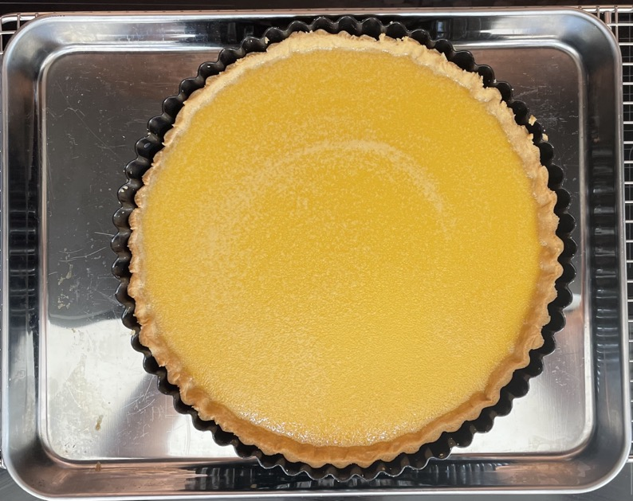
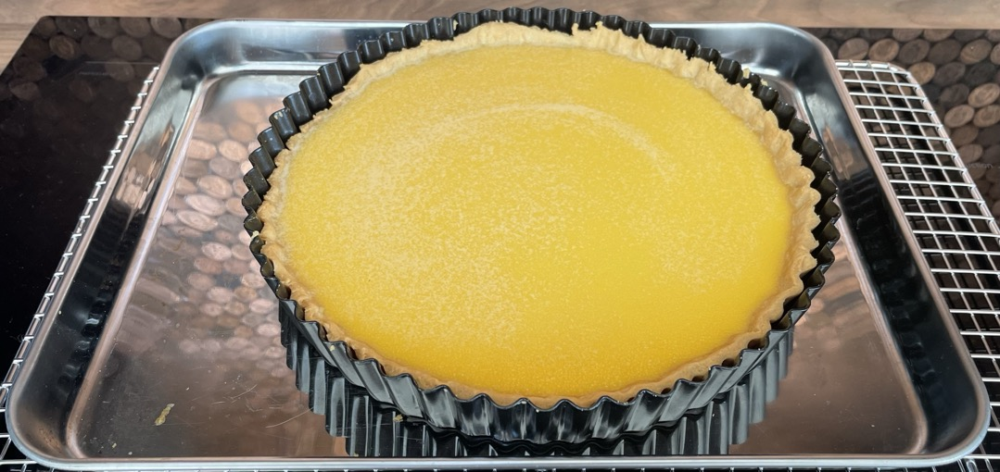

Honey & sesame custard tart
Pastry base
Custard
- Mix in bowl
- 4 large egg yolks
- 1 large egg
- Heat in saucepan and heat till steaming
- 400ml whipping cream
- 100g fancy honey
- Remove heat and add
- Slowly whisk cream mixture into eggs
- Leave for 2 mins
- Skim off foam
- Sieve into jug
Tart
- Pour half custard into the pastry base
- Transfer to oven
- Pour in rest of custard
- Bake at 110°C for 40-45 mins
- Remove from oven and leave to cool
- Cover with plate not with cling film
Topping
- Toast
- Leave to cool
- Sprinkle all over tart
- Place around edges of tart with long axis pointing at tart centre
Serving
Notes
- Original recipe
- Do not cover with cling film as this will stick to the custard
- Custard amounts from 6 egg yolks, 600ml cream, 150g honey, 0.7g salt: change depending on amount needed
Pics

